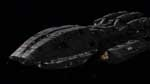
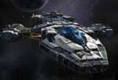
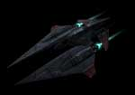

Перший корабель класу крейсер був введений в 2347 році. На даний час цей крейсер відноситься до класу корветів. Всього на в земному флоті перебуває на службі 10 крейсерів.

Введений в дію в 2620 році. Вважався флагманом флоту до побудови Дредноута в 2655 році. На барту розміщував:
Перший корабель класу крейсер був введений в 2347 році. На даний час цей крейсер відноситься до класу корветів.
Всього на в земному флоті перебуває на службі 10 крейсерів.

Лінкори як клас появилися під час першої холодної війни між Марсом і Землею в 2229 році. Це були важко озброєні, неповороткі кораблі.
Всього на земному флоті перебуває на службі 30 лінкорів. Найстаршому лінкору 20 років.

Корвети розповсюджені кораблі, які виконують функцію патрулювання, ескорту і інших типових задач. Перша машина була створена в 2200 році.

Створені по аналогії з земними машинами. Виконують функції виведення систем корабля зладу, мобільного реагування на загрози, а також боротьбу
з бомбардувальниками супротивника.

Аналогічні винищувачам. Менше швидкості і маневреності але несуть на борту ракети, які здатні сутєво пошкоди кораблі.
© 2017, Galaxy Battle: Human Revenge
All trademarks and registered trademarks appearing on this site are
the property of their respective owners.